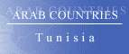
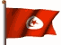

The Country & People of Tunisia
This page contains links to sites in Tunisia and Tunisia related sites.
For Middle East, North Africa, Arab and regional information visit Arab Countries
Hints:
- Use the "FIND" function in the Edit menu of your browser to search the page
- Use translating services in Chrome or Bing Bar in Internet Explorer to view page and/or linked websites in your language
General Info
* Business
* Culture
* Education
* History
* Media
* Organizations
* Travel
* Gateways
* Arab Countries
Tunisia, Fr. Tunisie, officially Republic of Tunisia, republic (2005 est. pop. 10,075,000), 63,378 sq mi (164,150 sq km), NW Africa, bordered by Algeria (W), the Mediterranean Sea (N and E), and Libya (SE). Tunis is the capital. The Atlas Mountains in the north form a dry plateau that merges with fertile plains near the coast; in the south, below the Chott Djerid and other salt lakes, stretches the Sahara desert. The irregular coastline has several fine harbors. Agriculture, mining, energy, tourism, and manufacturing are all important to the economy. Wheat, barley, grapes, olives, sugar beets, citrus fruits, and dates are the leading crops, and petroleum and phosphates are the principal minerals. Manufactured goods include textiles, steel, and processed food. The population is largely Berber and Arab, and Islam is the dominant religion. Arabic is the official language, although French is widely spoken.
History
Settled in the 12th cent. BC by Phoenicians, Tunisia became (6th cent. BC) the center of the powerful city-state of Carthage, which was destroyed by Rome in 146 BC Taken by the Vandals (5th cent. AD) and the Byzantines (6th cent.), the Arabs conquered Tunisia in the 7th cent., and the Berber population was converted to Islam. The area came under a succession of Muslim rulers, reaching its peak under the Berber Hafsid dynasty (1230–1574). In the late 16th cent. Tunisia was seized by the Ottoman Turks, and as one of the Barbary States it became a stronghold of pirates, on whom the treasury depended for several centuries. European intervention began in the 19th cent., and in 1881 Tunisia became a French protectorate. Nationalist agitation, which first surfaced in the 1920s, became intense after World War II, and independence was achieved in 1956.
In 1957 the country became a republic, with Habib Bourguiba as president.
Under Bourguiba, who was elected president-for-life in 1975, Tunisia was a moderate Arab state, following a generally pro-Western foreign policy; support for a negotiated settlement with Israel strained the country's relations with its Arab neighbors, however. Domestically, Bourguiba emphasized modernization and planned economic growth.
In 1981 he authorized the legal formation of opposition political parties, indicating a possible shift in the direction of liberal democracy.
In 1987 Bourguiba was deposed, on grounds of senility, by Gen. Zine el-Abidine Ben Ali. Ben Ali promised continued democratic reform, but he has ruled in an increasingly autocratic fashion and sought to crush Islamic-fundamentalist opposition. Under his regime the economy has seen significant growth as it has moved away from state control. In recent years relations with Libya have improved, and Tunisia joined with its North African neighbors in forming (1989) the Arab Maghreb Union.
Ben Ali was reelected unopposed in 1994 and against token opposition candidates in 1999.
A constitutional amendment, approved in 2002 in a referendum by a similar margin, permitted the president to run for more than two terms, and in 2004 Ben Ali was reelected with 95% of the vote; he again faced only token opposition. The landslide victories of Ben Ali and the government party have been marked by intimidation and credible accusations of vote-rigging.
In Dec., 2010, protests began against Ben Ali's government, sparked by the self-immolation of an unlicensed vendor who had his stall confiscated by police and fed by anger over high unemployment, rising prices, and government corruption. The demonstrations continued into the next month, and intensified after police killed a number of protesters.
Ben Ali's rule collapsed in a matter of weeks, and he went into exile in Jan., 2011. He later was convicted in absentia of embezzlement and other charges. An interim government was formed, with Fouad Mebazza, the parliament speaker, as president and Mohamed Ghannouchi remaining as prime minister. Though the cabinet included opposition members, the presence of former ruling party officials in the government was opposed by some, and the political environment remained unsettled. Ghannouchi resigned the following month and Beji Caid-Essebsi succeeded him. Elections for a constituent assembly (to write a new constitution and form an interim government) were planned for July, but subsequently they were postponed to October. The moderate Islamist Ennahda, led by Rachid Ghannouchi, won more than two fifths of seats in the assembly, with most of the rest of the seats going to several left-of-center parties and independents. Ennahda formed a coalition with secular opposition parties, and in December Moncef Marzouki of the Congress for the Republic party was elected president; Ennahda's Hamadi Jebali was appointed prime minister.
Secular parties concerned over persistent Islamist violence quit the government after the Feb., 2013, assassination of Chokri Belaid, a secular politician. Ennahda refused to back Jebali's attempt to form a technocratic government, and after he resigned, Ennahda's Ali Larayedh became (March) prime minister of a new government with two secular parties; several prominent cabinet posts went to independents. The assassination of opposition politician Mohamed Brahmi in July led to a new round of protests against the government and calls for a government of national unity. In September Ennahda agreed to talks on establishing a caretaker government and holding new elections, in October a road map for the process was finalized, and in Jan., 2013, Medhi Jomaa, a former industry minister, became caretaker prime minister. Also in January, the constituent assembly approved a new constitution, which reduced the powers of the president.
In the Oct., 2014, elections, Nidaa Tunis, an alliance of former Ben Ali officials, businesses, intellectuals, and unionists, won the largest number of seats, with Ennahda placing second. In the November presidential election, former interim prime minister Essebsi, the Nidaa Tunis candidate, placed first, and Marzouki second; Essebsi won the December runoff. In Feb., 2015, a government was formed that included Nidaa Tunis, Ennahda, and two additional parties, with Habib Essid as prime minister. Tunisian Islamist militants targeted tourist sites in deadly attacks (March, June) in 2015.
********
Copyright (c) 2012 Columbia University Press.
Used by permission of Columbia University Press.
General Info
Cities, towns, municipalities, places, flag, maps, useful Information....
Business
Economy, reports, statistics, banks, directories, jobs, investment, promotion....
Culture
General resources, heritage, art, literature, photography, cinema, music, song, dance, cultural, scientific,
environmental, sporting entities & info....
Education
Schools, colleges, academies, universities, polytechnics, institutions, research, resources, projects....
History
Ancient & modern history, human rights, politics & political parties, related sites, articles....
Media
Newspapers, magazines, news, newsletters, news agencies, radio, TV, internet, articles, reports, cartoons....
Organizations
Government, ministries, overseas missions, embassies, corporations, organizations, industrial entities, centers,
public hospitals, institutions, societies, foreign entities....
Travel
Airlines, air, sea & coach charters services, travel, tours, guides, hotels, resorts, inns, hostels, health,
travel tips, weather....
Gateways
Gateways, search engines and directories to country related sites and information....
Arab Countries
Arab World: Middle East, North Africa, Arab and regional information. Resources to other Arab countries....
About Tunisia
General Information Also see Travel
- ArabInfo Overview, government, history, links
- ArabNet Overview, history, geography, business, culture, government, transport, tour guide, links
- Atlapedia Geography, climate, people, demography, religion, education, modern history, currency, other information....
- BBC Country Profile Key facts, figures and dates
- Britannica.Com Country info, land, people, economy, society, government, history, culture, maps, statistics, links....
- CIA World Factbook Map, geography, people, government, economy, communications, transportation, military, issues
- Changement Culture, education, femme, societe, economie, environnement....
- Country Reports Economy, defense, geography, government, people, anthem, map, news, weather, links....
- Encarta OnLine Info, land & resources, population, economy, government, history, other related items, links....
- Encyclopaedia of the Orient Geography, politics, economy, health, education, religion, people, history, anthem, cities....
- Expedia Almanac, fast facts, communications, on business, health & safety, transportation, traveler's directory
- Focus OnLine Tunisia - From Carthage to modern Tunisia. General info, regions, tourism, cuisine, music, maps....
- Good Morning Tunisia
A specialized site in the centralization of the calls of public and private offers in Tunisia, as well as the new creations of appeared corporations in the JORT
- Info Please General info, map, geography, government, history, land & people....
- Nation By Nation Info, government, human rights, news, geography, history, people, links....
- Tunisia OnLine History, government, society, economy, culture, women, tourism, environment, news....,
Al Khadra >
- Tunisie.Com History, politics, society, economy, culture, women, tourism, environment, news....
- Tunisie Online.fr Photos, history, football....
- World66 General info, cities, history, people, economy, getting around, getting there, links....
Cities, Towns, Municipalities & Places
- Historic Tunisia Hammamet, Sousse, Monastir, Port El-Kantaoui, Djerba, Matmata, Chott El-Jarid....
- Ichkeul National Park A Natural World Heritage site
- Kerkennah The Kerkennah Isles official web site....
- Ras Jebel Photo gallery, history, music, news, sport
- World Heritage Cities Kairouan - A dense network of through and dead-end streets
- World Heritage Cities Medina of Sousse - Made up of tortuous streets and dead-ends
- World Heritage Cities Medina of Tunis - Made up of a non-rectilinear network of streets, vaulted passages, alleys and dead-end streets
Flag, Maps, Useful Information....
- Cellular News Cellular coverage map, systems, frequencies....
- Ethnologue Languages
- Flag Description, meaning, history, interesting facts
- Flag Explanation, historical, military & political flags, subdivisions, national emblem....
- Postal Stamps New issues, themes, catagories, years (since 1888) , artists engravers....
- World Atlas A brief description, fast facts, flag, landforms, maps, traveller info, weather
- World Clock Local time, sunrise, sunset, GMT offset, daylight saving....
- World Paper Money Paper currency since 1939
General Info
* Business
* Culture
* Education
* History
* Media
* Organizations
* Travel
* Gateways
* Arab Countries
Business and Economy
General, Economy, Reports & Statistics
- Australian Department of Foreign Affairs and Trade Fact sheet (pdf) & travel information....
- Bilateral Relations with Japan Diplomatic, investment, economic cooperation, residents....
- Bourse de Tunis Access to accurate and up-to-date information
- Chamber of Commerce and Industry of Tunis
Organize business missions, supply of information or documentations....
- FinAccess Financial and stock exchanges information in Morocco and Tunisia
- International Labour Organization Information and key figures
- Joint Tunisian-European Chambers of Commerce and Industry Developping commercial exchanges and industrial investments
- Jurisite Tunisie Tunisian Legal Portal
- MBendi Business information, news, industries, events
- Muslim Trade Network Trade reference directory and guide....
- Ports Focus Ports, harbours, marinas....
- Tunisian American Chamber of Commerce Access to accurate and up-to-date information
- Tunisia and the IMF Position in the fund, reports....
- US Department of State Country commercial guide 2001 (pdf)
- US Department of State Country reports on economic policy and trade practices - 1999
- US Department of Energy Analysis, information, oil, natural gas, coal, electricity....
- World Bank
Overview, news & events, data & statistics, publications & reports, development topics, projects & programs, Public Information Center
- World Trade Organization - WTO
Provides trade statistics, goods schedules, services schedules and MFN exemptions, trade policy reviews, dispute cases, and notifications
Banks
- Banque de l'Habitat
- Central Bank of Tunisia Economic and monetary information
Directories, Job Opportunities
- Career Tunis Online recruiters
Investment & Promotion....
- Export Promotion Center Provides support and assistance to Tunisian exporters and to their foreign counterparts
- Industrial Land Agency (AFI) Institution to boost industrial investment
- Invest in Tunisia Investment opportunities, key figures, foreign investment....
- Association de la Foire Internationale de Sfax Organization of fairs and national and international specialized exhibitions
- StelFair Business Gateway. The virtual fair for Tunisian products and services....
- Tunisian Industry Portal Industry promotion agency
- World Summit on the Information Society November 2005 - Bridging the digital divide
- Zarzis-Djerba Free Zone Offers to investors a site equiped with all viabilities
General Info
* Business
* Culture
* Education
* History
* Media
* Organizations
* Travel
* Gateways
* Arab Countries
Art, Culture & Sport
General Resources, Heritage....
- Culture Tunis
- Tunisian Association: Monuments and Sites Preservation of the national cultural personality
Art, Literature, Photography, Cinema....
- Abd Hanafi The artist, paintings, gallery, exhibitions....
- The Elevator Theatre
- Familia Theatre
- Ladybird Honeymoon Marionnette theatre
- Bill Hocker Photographs Photo Album - Tunisia
- Photos from Tunisia Photographs from tourists who want to place photographs of Tunisia in the Internet
- Arab Film Distribution - Tunisia Features a wide range of narrative films, documentaries, visual essays and ethnographic films
- Internet Movie Database Movie & TV reports
Music, Song & Dance....
- Memoire Contemporary Dance
Cultural, Scientific, Environmental, Sporting Entities & Info
- Cultural Heritage Management and Valorisation Project
- Observatoire National de la Jeunesse
- Tunisian Community Center Portal hosted by the Association of Tunisian Americans. A virtual community center in form and function
- Animal Info Threatened species, environmental and social data
- AquaStat Information on quantity and quality of freshwater and its availability
- Coupedafrique African Cup 2004....
General Info
* Business
* Culture
* Education
* History
* Media
* Organizations
* Travel
* Gateways
* Arab Countries
Education
Schools, Colleges, Academies, Universities & Polytechnics
- Faculte de Management et de Commerce International Tunis
- TIME Universite
- Universite du 7 Novembre Carthage
- Universite Central
- Universite Internationale Programs for both undergraduate and graduate students - Tunis
- Universite Libre de Tunis
- Universite Tunis Carthage
- WorldWide Classroom University & adult education, K12 & teen....
Institutions & Organizations
- Bourguiba Institute of Modern Languages (IBLV)
To teach modern languages and to conduct applied research in methodologies for teaching....
- Institut Central de Formation Un institut de formation professionnelle en informatique et bureautique. Tunis & Gafsa
- Institute of Development Finance of the Arab Maghreb Specialized in the area of banking and insurance
- Institut Maghrebin des Sciences Economiques et de Technologie (IMSET)
- Superior Institute of Sport and Physical Education (ISSEP Sfax)
To boost the training of the executives and the scientific research
Research, Resources & Projects
- Calculation El Khawarizmi Center for Computerization (CCK)
Provide the necessary means to promote Scientific research
- Centre de Calcul El Khawarizmi Le C.C.K , en tant que principal opérateur technologique pour l’enseignement supérieur et la recherche
- EduNet Tunisian Educational Portal
- Higher Education, Scientific Research and Technology in Tunisia
For Students and Teachers, events, activities....
General Info
* Business
* Culture
* Education
* History
* Media
* Organizations
* Travel
* Gateways
* Arab Countries
History, Human Right & Politics
Ancient & Modern....
- Political Geography Land and people, economy, government, history....
- Post-Cards Of Tunisia Collection of post-cards from Tunisia between 1910 and 1930 under the French colonization
- World Statesmen Flags, chronology, rulers, governors, ministers, commissioners....
Human Rights, Politics & Political Parties....
- Amnesty International News, reports, urgent action. Latest annual report....
- Human Rights in Tunisia Promote human rights, be they political, civil, social, economic or cultural
- Human Rights Watch Human rights developments & report
- US Department of State Country reports on human rights practices
- Rassemblement Constitutional Democartique Le Partie du Changement
Related Sites, Articles....
- Constitution Background, history & news
General Info
* Business
* Culture
* Education
* History
* Media
* Organizations
* Travel
* Gateways
* Arab Countries
Visit Arab Media for satellite stations & Arab newspapers
Media
Newspapers, Magazines....
- Al-Horria Daily newspaper
- Al-Sahafa Daily newspaper
- Al-Wahda Weekly newspaper
- Le Renouveau Quotidien Tunisien d'informations generales
- Tunisian Dailies La Presse Al-Sahafa >. (pdf)
OnLine News, Newsletters, News Agencies....
- Akhbar Tunis News online
- AllAfrica.Com News plus, news wire....
- La Press Online news
- Washington Post News & references
- Yahoo full news coverage
Radio, TV, Internet....
- Radio Tunis Looking for the latest news from Tunisia, listen to Tunisia National Radio
- Tunisia TV Journal, events, documentaries, sport....
Articles, Reports, Cartoons....
- TunisieInfo Sources d'information, documents, quotidiens, magazines, radio & TV, bulletins....
General Info
* Business
* Culture
* Education
* History
* Media
* Organizations
* Travel
* Gateways
* Arab Countries
Visit Arab Organizations for Pan-Arab, middle East, North Africa and regional organizations
Government & Organizations....
Government, Ministries, Overseas Missions, Embassies....
- Chiefs of State and Cabinet Members
- Political Leaders Dates and figures of the leadership since 1943 (with pictures)
- Tunisian Government Official site
- Agence Nationale de Certification Electronique (ANCE)
- National Agency of Environment Protection
- Nationales Archives of Tunisia
A valuable source for scientific research and an integral part of the national heritage
- National Institute for Standarization and Industrial Property
- National Statistics Council
Statistical data concerning the economic, social, environmental and other fields
- Office des Tunisiens a l'Etranger (OTE)
- Office for Upgrading
To inform the various partners on the upgrading process, regulations and procedures
- Topography and Cartography Office (TCO) Real estate registration, allotment and other various activities
- Tunisian National Social Security Fund Manages a number of social security schemes
Corporations, Organizations, Public Hospitals and Industrial Entities
- Agence Tunisienne d'Internet
- Elgazala Pole The Technological City of Communications
- Industries Chimiques du Fluor (ICF) Producers of aluminium fluoride
- Packaging Technical Centre - PACKTEC
A national central point for all economic operators concerned with packaging
- Poste Tunisienne
Centers, Institutions, Societies....
- Aouledouna Association of Handicapped Children Parents
- Association Féminine Tunisie 21
- Basma Association for the Promotion of Employment for the Disabled
- Institute for Health and Safety in the Workplace (ISST) To promote occupational health and safety
- Institute for the Promotion of the Handicapped
- National Pension and Social Benefit Fund Social Security in the public sector
- National Solidarity Fund To endow disadvantaged regions with basic infrastructure
- National Union of Tunisian Women
Promoting women's interests in all areas of society, including business, culture and science
- Regional Activity Centre for Specially Protected Areas -RAC/SPA U.N. environment programme. Mediterranean action plan
- Tunis Center for Conciliation and Arbitration Administer mediation, conciliation and arbitration procedures for the settlement of disputes
- Tunisia International Centre for Environmental Technologies Protection and management of natural resources
- Tunisian Journalists Association Report on press situation in Tunisia
- Tunisian Mothers Association
Conducts operational researches and studies on mothers' conditions, children and the family
- Tunisian Society of Psychiatry Preparing for the IXth Panarab Congress of psychiatry
- Tunisian Union of the Industry, Trade and Craft Organize missions of partnership
Foreign Entities
- British Embassy Consular, commercial, news, visa....
- Delegation of the European Commission in Tunis
- South African Embassy General, economic, travel, consular info
- US Embassy US mission, consular services, latest news, US policy, journals, articles....
- British Counsil Library and information services, events, news, conferences, learn English
- United Nations Le Programme des Nations Unies pour le developpement
- United Nations Information Center Tunis
- World Health Organization Tobacco & health, socio-economic situation
General Info
* Business
* Culture
* Education
* History
* Media
* Organizations
* Travel
* Gateways
* Arab Countries
Travel & Tourism
Airlines, Air, Sea & Coach Charters Services
- Nouvel Air Tunisie Une compagnie a vocation exclusivement charter
- Tunis Air
- Tunisian Civil Aviation and Airports Authority (OACA) Administration, flight schedules, airports....
Travel, Tours, Guides.... More country info
- Choose Tunisia Hotels, flights, tours, car hire, property , business, resturants, events, history, About Tunisia
- Carthage Tours Regular Tour Carthage, archaeological Tour, berber Tracks....
- Hedfi Travel Tunisia Vacation packages, travel Tunisia with nomads, acyivities....
- Ifriqiya Travel Tunisia with passion.... Discover Tunisia, stays, tours, water therapy....
- Tunisia.Com A comprehensive guide: Tunisian business, culture, travel, tours and shopping
- Tunisian Travel Service Tourisme local, excursions, sejours hôtels....
- Tourism Tunisia Travel & tourism guide from the Tunisian National Tourism Office
- Visit Tunisia A certain concept of hospitality establishing a customised and detailed tourism
- Adventures of Tunisia Getting there & costs, safety & health, visa, climate, cities, holidays....
- Africa Guide Introduction, visitor info, accommodation, tours....
- Lonely Planet Travel information, maps, photos, background historical and cultural information
- Middle East Travel Accommodation, history, after hours, travel info, addresses, cities & sights, business....
- Travel Guide General & travel info, money, duty free, health, accommodation, visas....
- Travel Puppy Tunisia travel information & guide
- World Travel Guide Travel information, regions & places....
Hotels, Resorts, Inns, Hostels....
- Abou Nawas Hotels Tunis, Tabarka, Gammarth, Hammamet, Sousse
- Abou Nawas Hotel Tunis - On the edge of the business and banking district
- Le Palace Carthage - Conceived in the biggest tradition of luxury and elegance
- Marhaba Hotels Situated between Sousse and Port El-Kantaoui....
- Pansea Ksar Ghilane A shimmering mirage awaits you in the Tunisian Sahara
- Renaissance Tunis Offering proximity to the antique sites of Carthage
- Thalassa Palace Nahrawess Hotel and holiday resort
- Ulysse Palace & Thalasso Djerba
- Yadis Hotels
Tunis, Hammamet, Djerba....
- All Hotels Hotels, description & rates
- Hostels Addresses & location
- Hotels Travel Hotels directory & tourist information
- Midoun Hotels Presents the best hotels, beach resorts, ski resorts, and spa resorts
- Sousse Hotels Listinfg of hotels, night clubs, resturants....
- Travel to Tunisia Hotel, weather, map....
- Tunisia Hotels Travel Guide Offers hotels and resorts online reservations
Health & Travel Tips
- Foreign & Commonwealth Office Travel information, country advise, latest travel updates....
- Travel Document Systems Passports, visas, travel documents
- US Consular Information Warning, visa, security, health, crime/drug penalties....
Weather....
- National Institute of Meteorology Weather forecasting, cClimatology, geophysics and astronomy....
- Tide Calendar Tide times, sunset, sunrise and global position
- Weather Underground Temperature, humidity, pressure and conditions by city
- Yahoo Weather By city. Forcast, sunrise, sunset, humidity, wind, dewpoint....
General Info
* Business
* Culture
* Education
* History
* Media
* Organizations
* Travel
* Gateways
* Arab Countries
Visit Arab Gateways for Arab and other country links
Gateways to Tunisia
- Carthagus Gateway, search engine....
- Nadhour Tunisie Gateway, horoscopes, gastronomy....
- Winoo Gateway, search engine, directory....
- Ya Tunis Gateway, search engine, directory....
General Info
* Business
* Culture
* Education
* History
* Media
* Organizations
* Travel
* Gateways
* Arab Countries
Please link to this page.
https://www.hejleh.com/countries/tunisia.html
For comments, reports of deadlinks and adding your URL
Names, pictures and logos are the copyright of their respective owners.
(C)Copyright 1998-2017 Mazen Hejleh. All rights reserved.